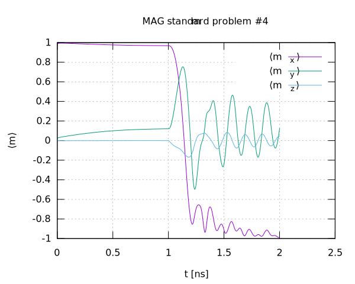

magnum.af: A finite differences GPU-accelerated micromagnetic and atomistic simulation software
Physical Methods
- Micromagnetic Model including the following interactions:
- Demagnetization (regular, true PBC, non-equidistant)
- Exchange (Neumann BC, PBC)
- Anisotropy (uniaxial and cubic)
- Dzyaloshinskii-Moriya (interface, bulk, D2d)
- Ruderman-Kittel-Kasuya-Yosida (RKKY)
- Slonczewski spin transfer torque
- External field
- Atomistic Spin Model with interactions:
- Dipole-Dipole
- Exchange
- Uniaxial Anisotropy
- Interface Dzyaloshinskii-Moriya
- External field
- Adaptive Runge-Kutta methods for solving the time-dependent Landau-Lifshitz-Gilbert equation:
- Runge-Kutta-Fehlberg (RKF45)
- Dormand-Prince (DP45 and DP78)
- Bogacki-Shampine (BS45 and BS23)
- Micromagnetic and Atomistic Energy Minimization
- LBFGS-Minimizer
- Precession-free LLG integration
- Stochastic Langevin Dynamics
- Stochastic Heun
- Semi-implicit Heun
- String Method for Energy Barrier Calculations
Software Architecture
magnum.af is a monolithic C++ application with python-bindings for a script-style user interface.
- The C++ core project is located at magnumaf/
- Python bindings in python/
- Enable a script-style user interface
- API compatible with numpy arrays
- Provides additional utilities handling user input
- Example scripts: python/examples/
magnum.af makes extensive use of the arrayfire GPU library:
- Convenient abstraction of GPU-hardware
- Both used in the API and internally
- Hardware-neutral with support for CUDA, OpenCL and CPU backends
- Provides a common container for all backends
- Runs on both Nvidia(R) and AMD(R) devices as well as on any x86 CPU
- Backends can be chosen at startup
Publications
Working on magnum.af led to the following publications:
- P. Heistracher, C. Abert, F. Bruckner, T. Schrefl, and D. Suess, “Proposal for a micromagnetic standard problem: domain wall pinning at phase boundaries,” arXiv:2107.07855 [physics], July 2021. arxiv.org/abs/2107.07855
- P. Heistracher, F. Bruckner, C. Abert, C. Vogler, and D. Suess, “Hybrid FFT algorithm for fast demagnetization field calculations on non-equidistant magnetic layers,” Journal of Magnetism and Magnetic Materials, vol. 503, p. 166592, June 2020. DOI: 10.1016/j.jmmm.2020.166592
- P. Heistracher, C. Abert, F. Bruckner, C. Vogler, and D. Suess, “GPU-Accelerated Atomistic Energy Barrier Calculations of Skyrmion Annihilations,” IEEE Transactions on Magnetics, vol. 54, pp. 1–5, Nov. 2018. DOI: 10.1109/TMAG.2018.2847446
Moreover, magnum.af has been used in the following publications:
- M. Heigl, S. Koraltan, M. Vaňatka, R. Kraft, C. Abert, C. Vogler, A. Semisalova, P. Che, A. Ullrich, T. Schmidt, J. Hintermayr, D. Grundler, M. Farle, M. Urbánek, D. Suess, and M. Albrecht, “Dipolar-stabilized first and second-order antiskyrmions in ferrimagnetic multilayers,” Nature Communications, vol. 12, p. 2611, May 2021. DOI: 10.1038/s41467-021-22600-7
- F. Bruckner, A. Ducevic, P. Heistracher, C. Abert, and D. Suess, “Strayfield calculation for micromagnetic simulations using true periodic boundary conditions,” Scientific Reports, vol. 11, p. 9202, Apr. 2021. DOI: 10.1038/s41598-021-88541-9
- A.-O. Mandru, O. Yıldırım, R. Tomasello, P. Heistracher, M. Penedo, A. Giordano, D. Suess, G. Finocchio, and H. J. Hug, “Coexistence of distinct skyrmion phases observed in hybrid ferromagnetic/ferrimagnetic multilayers,” Nature Communications, vol. 11, p. 6365, Dec. 2020. DOI: 10.1038/s41467-020-20025-2
- D. Suess, C. Vogler, F. Bruckner, P. Heistracher, F. Slanovc, and C. Abert, “Spin Torque Efficiency and Analytic Error Rate Estimates of Skyrmion Racetrack Memory,” Scientific Reports, vol. 9, p. 4827, Mar. 2019. DOI: 10.1038/s41598-019-41062-y
- D. Suess, C. Vogler, F. Bruckner, P. Heistracher, and C. Abert, “A repulsive skyrmion chain as a guiding track for a racetrack memory,” AIP Advances, vol. 8, no. 11, p. 115301, Nov. 2018. DOI: 10.1063/1.4993957
Code Repositories
magnum.af is publicly hosted on github as well as self-hosted on our gitlab server:
Documentation
HTML documentation is available on https://magnum-af.github.io
Simulation Script Examples
Various example scripts are found in the respective directories for python in python/examples/ and for c++ in magnumaf/examples/ as well as in the html-documentation under 'Examples'.
The following is an example of the python API for the standard problem 4 (full example under python/examples/sp4.py):
import arrayfire as af
import magnumaf as maf
# physical dimensions in [m] and discretization
x, y, z = 500e-9, 125e-9, 3e-9
nx, ny, nz = 100, 25, 1
# initial magnetization
m0 = af.constant(0.0, nx, ny, nz, 3, af.Dtype.f64)
m0[1:nx-1, :, :, 0] = 1.0
m0[ 0, :, :, 1] = 1.0
m0[ -1, :, :, 1] = 1.0
# creating magnum.af objects
mesh = maf.Mesh(nx, ny, nz, dx=x/nx, dy=y/ny, dz=z/nz)
state = maf.State(mesh, Ms = 8e5, m = m0)
# define interactions
dmg = maf.DemagField(mesh)
exc = maf.ExchangeField(A = 1.3e-11)
# setup integrator
llg = maf.LLGIntegrator(alpha = 1.0, terms = [dmg, exc])
outfile = open("m.dat", "w")
# relaxing
while state.t < 1e-9:
llg.step(state)
print(state, file = outfile)
# preparing switch
H_ext = af.constant(0.0, nx, ny, nz, 3, af.Dtype.f64)
H_ext[:, :, :, 0] = -24.6e-3/maf.Constants.mu0
H_ext[:, :, :, 1] = 4.3e-3/maf.Constants.mu0
ext = maf.ExternalField(H_ext)
llg.add_terms(ext)
llg.alpha=0.02
# switching
while state.t < 2e-9:
llg.step(state)
print(state, file = outfile)
Plotting the generated data yields:

Installation Guide
Docker:
The easiest way to get started is to download the current docker image from our gitlab registry. There you can choose between the CPU image or the CUDA image. To download the CUDA image, use:
$ docker pull git.exp.univie.ac.at:4567/paul/magnum.af:latest
Otherwise, you could build the GPU image provided in the Dockerfile by running the following command in the project's root directory:
$ nvidia-docker build -t magnum.af -f Dockerfile --build-arg user="$UID" .
For CPU support only use:
$ docker build -t magnum.af.cpu -f Dockerfile.cpu --build-arg user="$UID" .
For running simulations, you may use the provided script in bash/magnum.af.docker, which manages volume mounting and sets permissions such that output files can be written to the output folder. Use e.g.:
$ magnum.af.docker sp4.py
Local installation:
For GPU-support, first install a GPU-driver provided by your vendor.
GPU Driver Installation
Make sure your user is part of the video group using $groups | grep video.
If not, add your user to the video group:
$ sudo usermod -a -G video $LOGNAME
perform a logout-login for the changes to have effect.
In the following, choose either NVIDIA or AMD depending on your hardware:
a) NVIDIA: nvidia-driver and CUDA:
following linuxconfig.org:
$ sudo ubuntu-drivers autoinstall
Note: if the driver version provided by the repo is not sufficient, use a ppa instead:
$ sudo add-apt-repository ppa:graphics-drivers && sudo apt-get update
And select the proper driver version, e.g.:
$ sudo apt install nvidia-driver-418 nvidia-settings
install CUDA with
$ sudo apt install nvidia-cuda-toolkit
b) AMD: AMDGPU driver and OpenCL
Follow linuxconfig.org
On the tested system, the install script needed to be invoked with the option --opencl=legacy (tested with driver: amdgpu-pro-19.20-812932-ubuntu-18.04 for Radeon 580 series GPU):
$ ./amdgpu-pro-install --opencl=legacy -y
for cmake to find OpenCl run:
$ sudo apt install ocl-icd-opencl-dev
If you only want CPU-support, the driver installation can be skipped.
Further steps
The prefered way for local installation is to manually follow the steps from the [Dockerfile](Dockerfile) or Dockerfile.cpu, respectively.
Alternatively, follow these steps:
Install Arrayfire
For version 3.6.2:
$ wget https://arrayfire.s3.amazonaws.com/3.6.2/ArrayFire-v3.6.2_Linux_x86_64.sh .
$ chmod +x ArrayFire-v3.6.2_Linux_x86_64.sh
$ sudo ./ArrayFire-v3.6.2_Linux_x86_64.sh --include-subdir --prefix=/opt
For the loader to find the arrayfire lib use either:
$ echo /opt/arrayfire/lib > /etc/ld.so.conf.d/arrayfire.conf
$ sudo ldconfig
Or add the following line to your .bashrc file:
‘$ echo 'export LD_LIBRARY_PATH=/opt/arrayfire/lib:$LD_LIBRARY_PATH’ >> .bashrc`
Install dependencies
$ sudo apt install libvtk7-dev libgmock-dev libboost-program-options-dev
Install Python Packages
$ sudo pip3 install cython
$ sudo pip3 install arrayfire
Build <strong>magnum.af</strong>
Prerequisites:
- A C++17 compiler like gcc or clang
- CMake 2.8 or newer
$ mkdir build && cd build && cmake .. && make -j
Install to system directories using:
$ sudo make install
To uninstall afterwards, use:
$ sudo make uninstall
For python to find the shared library, add the install directory to the PYTHONPATH, e.g.:
‘$ echo 'export PYTHONPATH=/usr/local/lib/:$PYTHONPATH’ >> .bashrc`
or alternatively, add a symbolic link to a folder in the PYTHONPATH, e.g. for python 3.6 $ `sudo ln -s /usr/local/lib/magnumaf.so /usr/lib/python3.6/
 1.9.1
1.9.1